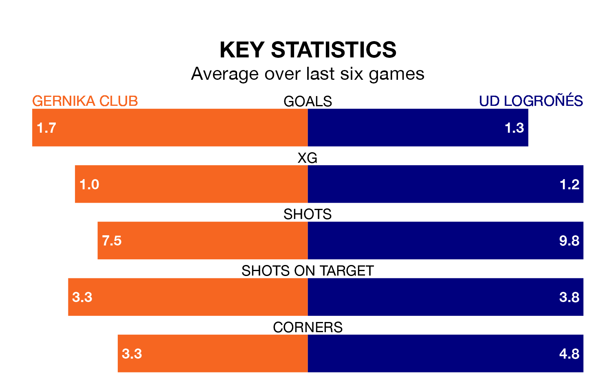

Gernika Club host UD Logroñés at the Estadio Urbieta on Sunday on the back of three consecutive wins in the Segunda División RFEF Group 2.
Gernika Club have picked up 12 points from their last six games, and they face a Logroñés side who drew their last match, and have collected 11 points from the last possible 18.
With 61 goals in 31 games so far this season, Logroñés are the league's highest scorers with 2.0 goals per game. And they are conceding fewer than average, letting in 16 goals at a rate of 0.5 per game.
Gernika Club are also above average scorers, with 1.2 goals per game, compared to a league average of 1.1. They have conceded 1.4 goals per game.
The away side are third in the table after 31 games, of which they have won 17 and drawn 11, earning 62 points.
The hosts are five places behind Logroñés in eighth, with 11 wins and 10 draws putting them on 43 points.
In the last 10 years, Gernika Club and Logroñés have played each other on seven occasions. Gernika Club won one of them, Logroñés five, and they drew once.
On average, Gernika Club scored 0.4 goals and Logroñés 2.6 in those matches.
Their last meeting was on December 10, when Logroñés won 7-1 at home.
Gernika Club's last match was on April 14, a 2-0 win against Brea, with Josu Gallastegui Garate and Néstor Lucas Rey getting the goals for Gernika Club.
Logroñés drew 0-0 with Real Sociedad III last time out, also on Sunday.
Updated: 15:40 (UTC), 18/04/24